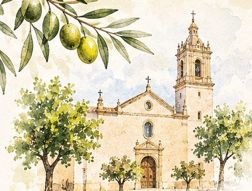
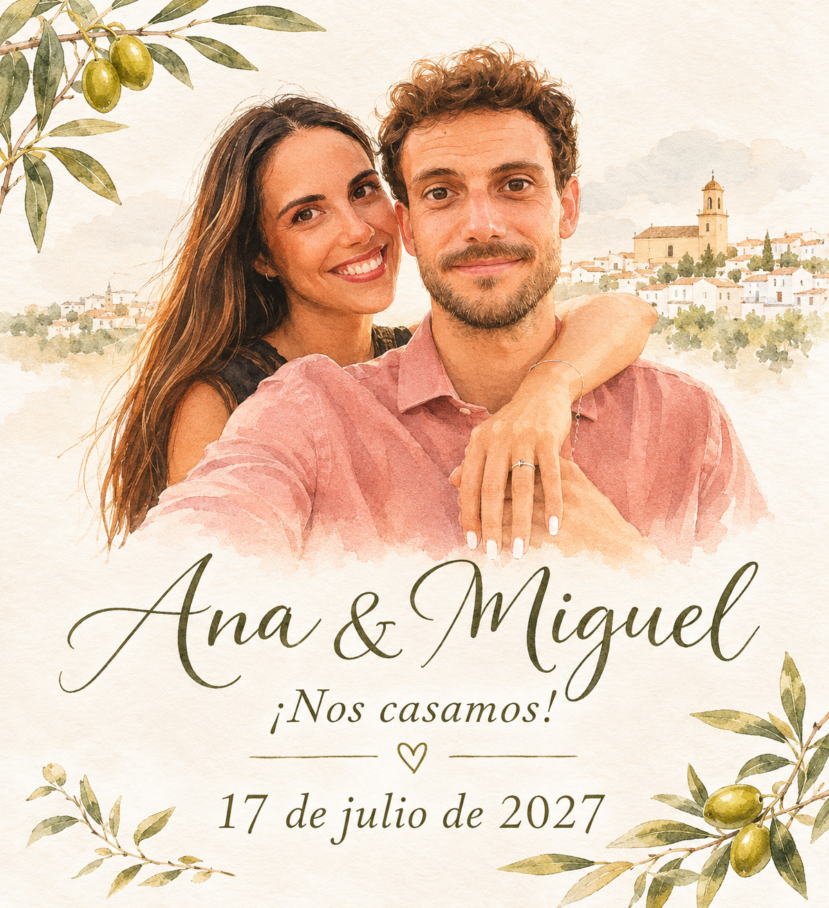
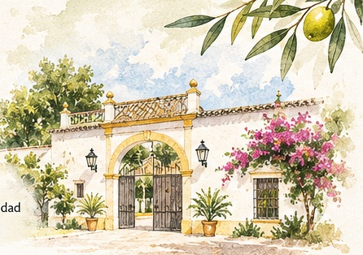
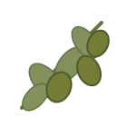

Iglesia de San Eutropio
18:30 h (hora provisional)
Paradas, Sevilla
Cómo llegar ↗
Hay momentos que son aún más especiales cuando los compartimos con las personas que queremos. ¡Nos encantaría celebrarlo contigo!
Dos lugares muy especiales para celebrar juntos el comienzo de esta nueva etapa.

18:30 h (hora provisional)
Paradas, Sevilla
Cómo llegar ↗
Después de la ceremonia
Mairena del Alcor, Sevilla
Cómo llegar ↗Habrá transporte organizado entre el alojamiento recomendado, la iglesia y la celebración.
Salida desde el alojamiento en Paradas hacia la ceremonia.
Después de la ceremonia, traslado hasta Mairena del Alcor.
Regreso a Paradas al finalizar la celebración, con parada en el Hostal Nueva Andalucía.
Os dejamos algunas ideas para descansar y aprovechar el fin de semana. La opción más cómoda para utilizar el autobús es Paradas.
Sevilla · Hotel
Ver ubicación ↗Buscar en Booking ↗Sevilla · Hotel
Ver ubicación ↗Buscar en Booking ↗Sevilla · Hotel
Ver ubicación ↗Buscar en Booking ↗Sevilla · Hotel
Ver ubicación ↗Buscar en Booking ↗Sevilla · Hotel
Ver ubicación ↗Buscar en Booking ↗Sevilla · Hotel
Ver ubicación ↗Buscar en Booking ↗Mairena del Alcor · Cerca de la celebración
Ver ubicación ↗Buscar en Booking ↗Marchena · Hotel céntrico
Ver ubicación ↗Buscar en Booking ↗Marchena · Hasta 5 personas
Ver ubicación ↗Buscar en Booking ↗Marchena · Hasta 6 personas
Ver ubicación ↗Buscar en Booking ↗Marchena · Hasta 7 personas
Ver ubicación ↗Buscar en Booking ↗Paradas · Prioridad para los invitados
Primera opción recomendada. Mejor acceso en dirección Málaga. Reservas: 954 849 265 · nuevandalucia@gmail.com
Ver ubicación ↗Buscar en Booking ↗Paradas · Segunda opción
Reservas: 954 849 265 · nuevandalucia@gmail.com
Ver ubicación ↗Buscar en Booking ↗Las tarifas y la disponibilidad deben consultarse directamente. La recogida prevista del autobús es en el Hostal Nueva Andalucía; las paradas definitivas dependerán de dónde se alojen los invitados.
Para disfrutar de la gastronomía de nuestra tierra, os dejamos algunos lugares que recomendamos.
En Mateos Gago, junto a la Catedral. No os perdáis el montadito de pringá, el pincho de tortilla, la ensaladilla y el vino de naranja.
Imprescindible probar su famoso montadito Piripi y su variedad de tapas.
Junto a la Plaza de la Magdalena, frente al Corte Inglés de San Pablo. Tapas más elaboradas a buen precio.
En Los Bermejales, un poco más lejos del centro, pero una opción estupenda para tapear.
Un rincón tradicional para disfrutar del tapeo sevillano.
Junto al puente de la Barqueta, con una gran terraza y zona chill-out para alargar la sobremesa.
En la calle Betis, a orillas del Guadalquivir, en Triana.
En la avenida de la Buhaira.
El de la calle Guadalquivir: un ambiente especial para comer o cenar.
Cerca de la Alameda de Hércules, conocido por sus tapas elaboradas.
Para quienes buscan una comida más gastronómica.
Una propuesta tradicional para tapear.
Una taberna histórica para conocer el tapeo sevillano.
Para disfrutar de tapas en el centro de Sevilla.
Si venís de fuera, aprovechad para conocer los pueblos de nuestra campiña, tapear y disfrutar del sur. ¡En julio, mejor a primera o última hora!
El pueblo de nuestra ceremonia, con la Iglesia de San Eutropio y el encanto de la campiña sevillana.
El Arco de la Rosa, sus iglesias y el casco histórico merecen un paseo.
El Castillo de Luna y sus calles tradicionales, cerca de la hacienda.
Pasead por el Barrio de Santa Cruz, la Catedral y la Giralda; no os perdáis el Parque de María Luisa y la Plaza de España.
Aviso sobre la Plaza de España: En julio suelen celebrarse conciertos y puede haber restricciones de acceso o cierres al público. Os recomendamos comprobarlo antes de visitarla.
Una joya de la Campiña: su casco histórico, la Puerta de Sevilla y las vistas desde sus miradores.

Manzanilla y Gordal: un sabor de nuestra tierra.
Un aperitivo elaborado por una empresa de Paradas.
Con aceite de oliva virgen extra de Paradas.
Dulces típicos que podéis encontrar en la Panadería Pepe Martín de Paradas.
Tapas y raciones para compartir en nuestros bares.
Podéis responder por toda la familia o pareja en un solo formulario.
Si necesitáis preguntarnos cualquier cosa sobre la boda, el alojamiento o los autobuses, podéis llamarnos.